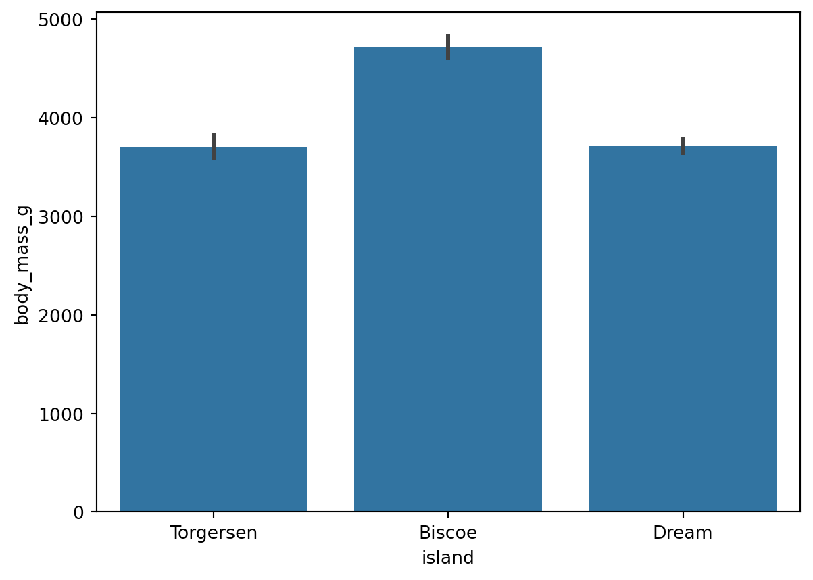

Exploring image centering styles in a Quarto Website and fixing hover preview issues.
A Longitudinal Analysis of Public Sentiment and Thematic Trends in AI-Related Tweets
Browse random cat images and save your favorites after signing in.
Latest news feed and aggregation web app.
Compact long URLs into shareable short links with customized slugs.
Common R tips & code snippets: dplyr data manipulation, stringr text operations, CSS color names…
Exploratory analysis of the most-streamed tracks on Spotify in 2023, uncovering trends in music…
Analysis of social media habits and addiction patterns among students, with behavioral and…
A comparative study of visa costs across countries, exploring affordability and geographic…
Use Plotly, Pyvis & NetworkX to create sankey & network diagrams.
Sentiment mining on tweets surrounding the 2017 Catalan independence referendum using NLP…
Use Seaborn to create multivariate visualizations: scatter plots, line pots, heatmaps, joint…
Data processing/cleaning workflows in Pandas: missing values, duplicates, reshaping, joins…

Use Seaborn to create visualizations for amounts & distributions: barplots, point plots…
Recovering Windows shell folders such as Documents, Videos, and Pictures after they were…
--- title: "All Posts" include-after-body: '../../src/scripts/post-type-filter.html' toc: false sidebar: false number-sections: false back-to-top-navigation: false reading-meta-enabled: false draft: true draft-mode: unlinked listing: id: all-listing contents: - ../projects/*/index.*md - ../tutorials/*/index.*md - ../blogs/*/index.*md - ../tools/*/index.*md type: grid # categories: true max-description-length: 100 fields: [image, title, categories, description, author, date, post-type] grid-columns: 2 image-height: "12rem" image-align: left # image-placeholder: "" sort: # - "order asc" - "date desc" - "title asc" sort-ui: [title, date] filter-ui: true page-size: 6 # feed: true ---